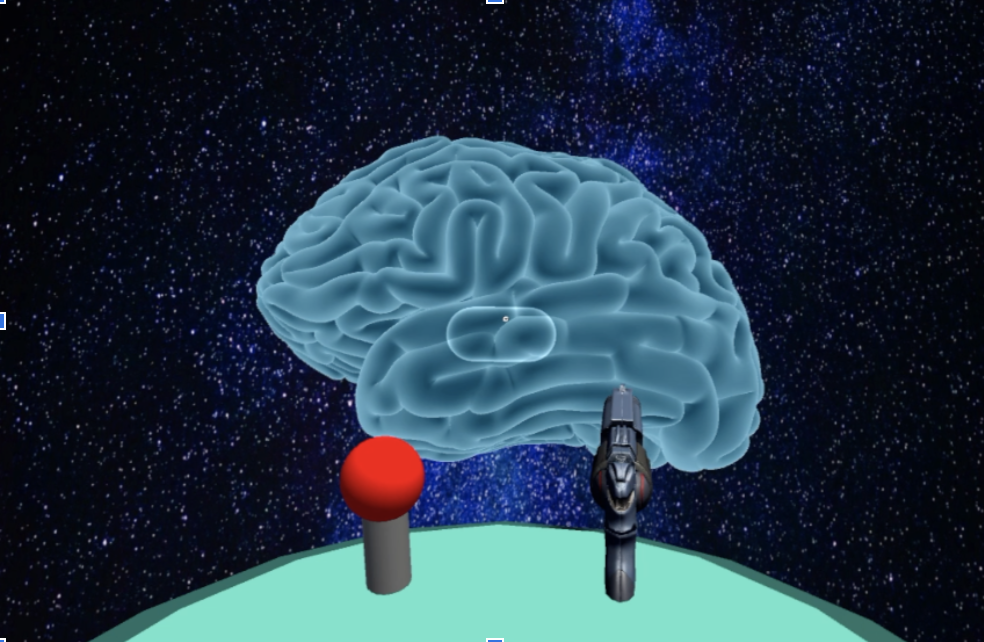
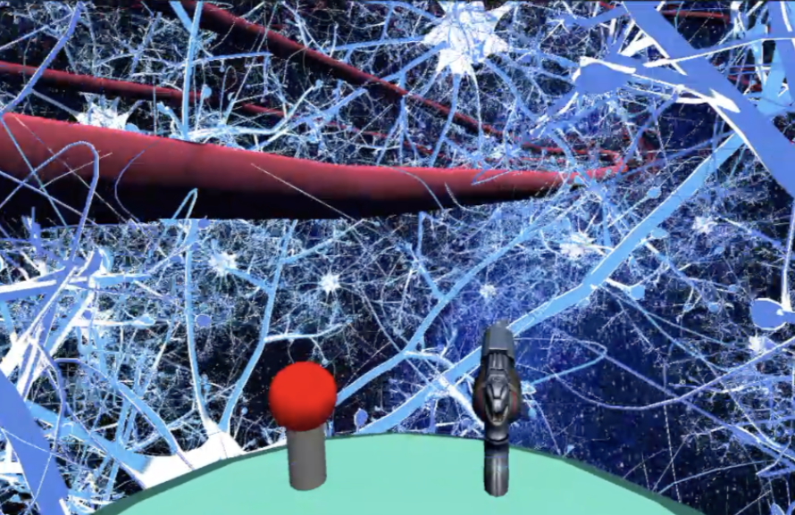
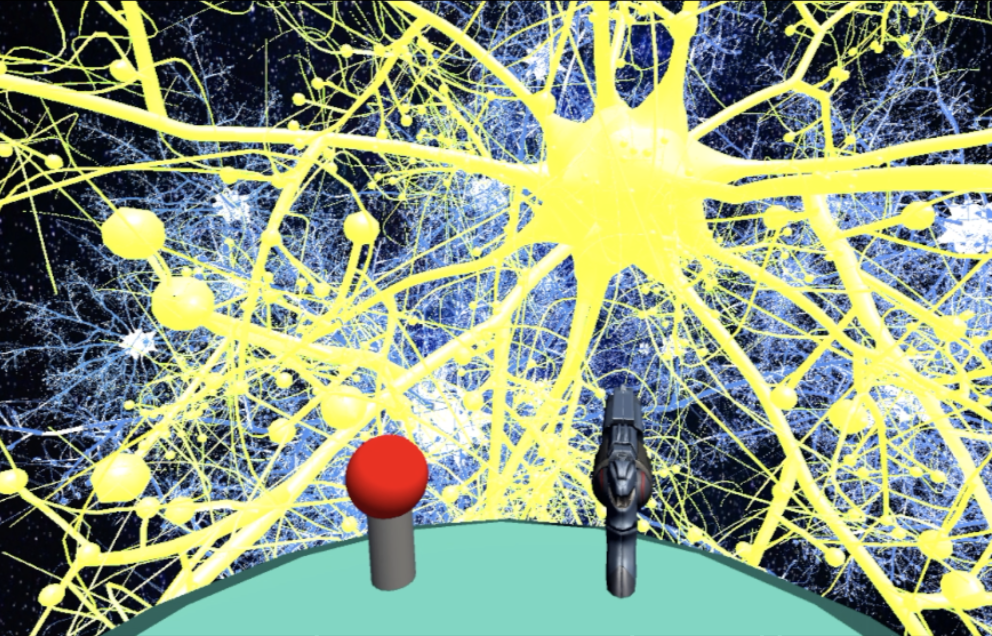
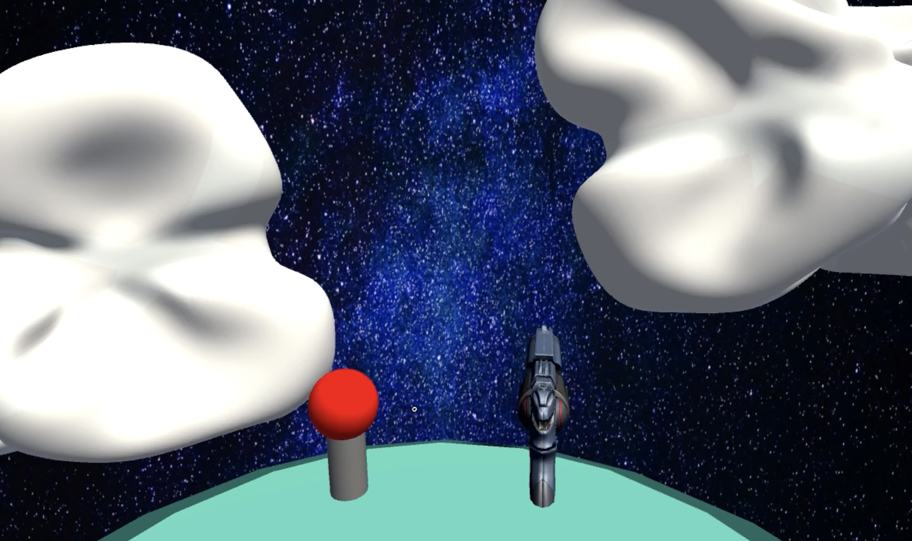

Problem
Neuroscience is a subject interesting to explore and important to the studies of many other fields as well. However, the beginning of neuroscience study can be somewhat hard. Unlike subjects such as math or computer science, students see algebra, shapes, or codes exactly as they are on textbooks or desktop screens. The neuroscience theories can be abstract and difficult to understand, especially for starters, because people cannot see what takes place in the brain.
Solution: VR experience for neuroscience education
Key Interactions
   The reason why I choose VR to solve the problem: neuroscience can be hard, abstract, and not appealing because people cannot see what takes place in the brain. What is different from other VR products with the topic of brain/neuron trips: I will pay more attention to the journey process for education, and try to create more chances for interactions to let users be more engaged.